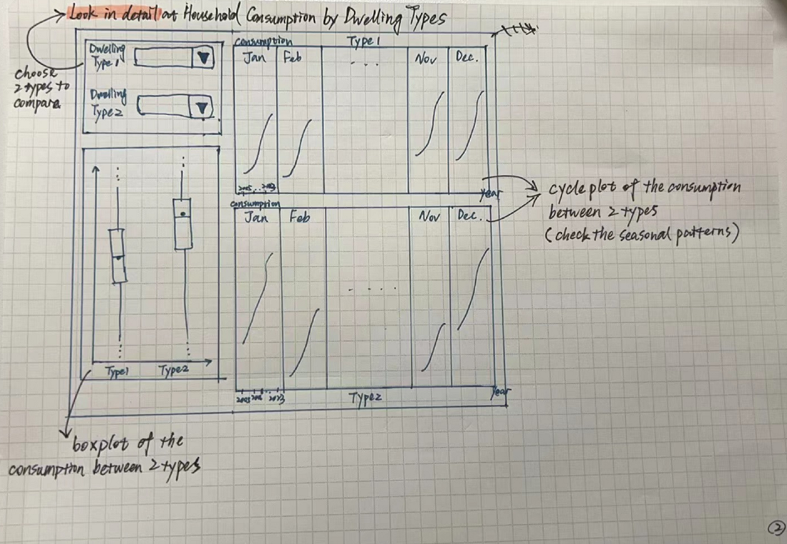

pacman::p_load(ggiraph, plotly,
patchwork, DT, tidyverse, dplyr, ggthemes, readxl) Take-home Exercise 4
EcoWatt Prototype
1. Overview
1.1 Setting the Scene for This Take Home Exercise
For this take-home assignment, weare tasked with choosing a module from our proposed Shiny application and accomplishing the tasks listed below:
- Assess and identify the required R packages for our Shiny application, ensuring they are available on CRAN,
- Develop and verify the specific R codes to ensure they execute properly and yield the anticipated results,
- Identify the parameters and outputs that will be made available through the Shiny application,
- Choose suitable Shiny UI components for displaying the parameters identified previously.
For this Take-home Exercise 4, we be asked to create a module report similar in content to one of the aforementioned prototype modules. However, there will be a few key differences:
- Your module report for Take-home Exercise 4 must be published on your own coursework page, serving as your submission for this assignment.
- You must include a section titled “UI Design,” detailing the different components of the user interface for your proposed design.
- For guidance on storyboarding the UI Design, please refer to the provided Storyboard link.
2. Getting Started
2.1 Loading Necessary R packages
We will utilise the following packages:
ggiraph for making ‘ggplot’ graphics interactive.
plotly, R library for plotting interactive statistical graphs.
DT provides an R interface to the JavaScript library DataTables that create interactive table on html page.
tidyverse, a family of modern R packages specially designed to support data science, analysis and communication task including creating static statistical graphs.
patchwork for combining multiple ggplot2 graphs into one figure.
ggthemes is an R package that offers additional themes, geoms, and scales for ‘ggplot2’
The code which loads the R packages:
2.2 Import dataset
Of course our next step involves importing the dataset. Our project revolves around electricity consumption in Singapore. This data can be retrieved from EMA and this excel file contains many sheets.
IMPORTANT
2023 values will always appear lower as the datasest contains only 6 months worth of data.
I will be using the tidy dataset and will be importing sheet T3.4.
The following code snippet will outline the sequential steps we will undertake:
house_ec <- read_excel("data/SES_Public_2023_tidy.xlsx", sheet = "T3.4")3. EDA
3.1 EDA: Household Electricity Consumption Trend from 2005 - 2023
Firstly, we want to find out the household electricity consumption trend across the years.
We will filter the data accordingly as shown in the code snippet below:
filtered_house_ec <- house_ec %>%
filter(year >= 2005, year <= 2023, month == "Annual", DWELLING_TYPE == "Overall")We will then construct a line plot so we could clearly observe a trend in the household electricity consumption across the years.
Show the code
p <- ggplot(data=filtered_house_ec,
aes(x = year,
y = consumption_GWh)) +
geom_point(size=1) +
geom_line() +
coord_cartesian(xlim=c(2005,2023),
ylim=c(0,9000)) +
labs(x = "Year", y = "Total Consumption (GWh)", title = "Annual Household Electiricty Consumption from 2005 to 2023")
ggplotly(p)
Observations
Overall Trend: There appears to be a general increase in household electricity consumption from 2005 until about 2021, where consumption levels drop off slightly in 2022.
Peak Consumption: The peak in consumption is around 2020 or 2021, after which there’s a slight decrease.
Decerement: Observing a modest decline in energy consumption during 2017 and 2018, it’s plausible to attribute this shift to the impactful initiatives by the National Environment Agency (NEA), particularly through its Energy-Saving Challenge. This campaign, which spanned the said years, successfully encouraged households to adopt more sustainable energy practices. The 2018 edition of the Energy-Saving Challenge specifically rallied households to cut down on their electricity usage by implementing three straightforward but effective measures: turning off appliances when not in use, maintaining air-conditioner temperatures at 25°C or above, and opting for more energy-efficient appliances, evident through higher tick ratings. Such measures not only promoted environmental stewardship but also offered financial incentives, with reductions in electricity bills by at least one percent making participants eligible for a variety of attractive prizes.
3.2 EDA: Public vs Private Housing
Moving on, we want to find out the household electricity consumption of public and private housing in Singapore across the years.
Public Housing includes:
1-room/2-room
3-room
4-room
5-room and Executive
Private Housing includes:
Private Apartments and Condominiums
Landed Properties
We will filter the data accordingly as shown in the code snippet below:
filtered_ec <- house_ec %>%
filter(year >= 2005, year <= 2023,
month == "Annual",
DWELLING_TYPE %in% c("Public Housing", "Private Housing"))Show the code
p <- ggplot(data=filtered_ec,
aes(x = year,
y = consumption_GWh, colour = DWELLING_TYPE)) +
geom_point(size=1) +
geom_line() +
coord_cartesian(xlim=c(2005,2023),
ylim=c(0,9000)) +
labs(x = "Year", y = "Total Consumption (GWh)", title = "Public vs Private Housing: Annual Household Electiricty Consumption from 2005 to 2023")
ggplotly(p)3.3 EDA: Different Dwelling Types
We will now look into detail on the household electricity consumption from all dwelling types in Singapore across the years.
We will filter the data accordingly as shown in the code snippet below:
filtered_dwelling_ec <- house_ec %>%
filter(year >= 2005, year <= 2023,
month == "Annual",
DWELLING_TYPE %in% c("1-room / 2-room", "3-room", "4-room", "5-room and Executive", "Private Apartments and Condominiums", "Landed Properties"))Show the code
p <- ggplot(data=filtered_dwelling_ec,
aes(x = year,
y = consumption_GWh, colour = DWELLING_TYPE)) +
geom_point(size=1) +
geom_line() +
coord_cartesian(xlim=c(2005,2023),
ylim=c(60,2500)) +
labs(x = "Year", y = "Total Consumption (GWh)", title = "Dwelling Types: Annual Household Electiricty Consumption from 2005 to 2023")
ggplotly(p)Prototype & UI Design
.1 The image below shows a sketch of the prototype.
